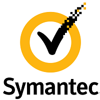
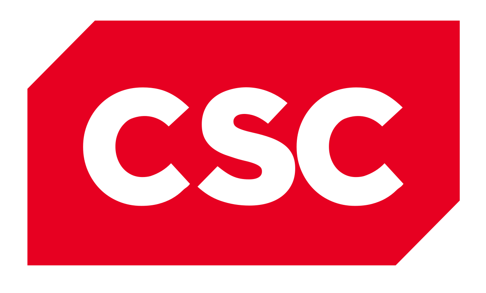
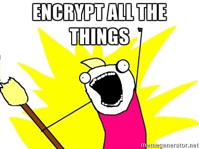
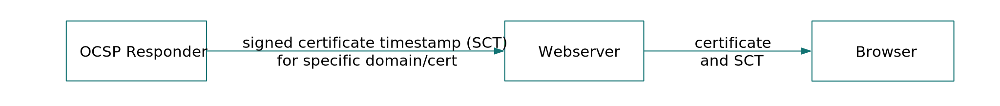

layout: true class: theme-whiskey, slides-left --- name: cover # HTTPS with Let's Encrypt Carsten Meier<br> Peerigon GmbH<br> <img id="slide-cover-img" src="./assets/peerigon-logo.png" width="400"> --- layout: true class: theme-whiskey, slides-centered --- class: slides-chapter ## Who broke the interwebz --- <blockquote class="twitter-tweet" data-lang="de"> <p lang="en" dir="ltr">SSL is really slow.</p> </blockquote> <p class="small">A lazy developer, ~2012 or before</p> --- > On our production frontend machines, SSL/TLS accounts for less than 1% of the CPU load, less than 10KB of memory per connection and less than 2% of network overhead. [...] If you stop reading now you only need to remember one thing: SSL/TLS is not computationally expensive any more. Adam Langley, Google Inc., [blog post](https://www.imperialviolet.org/2010/06/25/overclocking-ssl.html), **06/2010** --- <blockquote class="twitter-tweet" data-lang="de"> <p lang="en" dir="ltr">We don't need to protect all data anyway.</p> </blockquote> <p class="small">Some product manager, ~2012 or before</p> --- --- --- <blockquote class="twitter-tweet" data-lang="de"> <p lang="en" dir="ltr">Okay, then let's use well-tested standard tools and protocols to secure our web connections!</p> </blockquote> <p class="small">Every web dev, ~2013</p> --- <p>How about using OpenSSL with SSLv3 and RC4? RC4 is really fast, right?</p> --- <ul class="strikethrough"> <li><span>SSLv3</span></li> <li><span>TLSv1.0</span></li> <p> </p> <li><span>RC4</span></li> <li><span>DSA</span></li> <li><span>SHA-1</span></li> <p> </p> <li><span>DNS</span></li> <li><span>BGP</span></li> </ul> --- Plus we found a lot of nasty bugs: #### OpenSSL, Debian, Android, iOS, ... > goto fail; --- ... and nasty companies <div style="display: flex; width: 100%; justify-content: space-between; align-items: center;">  <img src="assets/cnnic.png" style="height: 20vh;" />  </div> <small> Sources: [[1](http://www.tomshardware.com/news/google-removes-symantec-root-certificate,30742.html)] [[2](http://www.tomshardware.com/news/google-bans-cnnic-root-ca,28873.html)] [[3](http://www.sueddeutsche.de/digital/csc-deutschland-umstrittener-nsa-dienstleister-verliert-ausschreibung-1.2378310)] [[4](https://security.googleblog.com/2016/10/distrusting-wosign-and-startcom.html)] </small> --- class: slides-chapter ## Who broke the interwebz --- class: slides-chapter ## Who broke the interwebz <p>We did!</p> <p>(ノಥ,_｣ಥ)ノ彡┻━┻</p> ---  <p>(thanks Mozilla & Google for forcing us with HTTP/2 👍)</p> --- ### What do we need? <p>easy!</p> <ul> <li>X.509 certificate from a browser-trusted CA</li> <li>HTTPS-capable webserver</li> <li>some configuration magic</li> </ul> --- class: slides-chapter ## Certificates are kind of expensive though... 😓 <p>(also, nearly all CAs are crap)</p> --- <img src="assets/le-logo.svg" style="width: 100%;" /> <blockquote>Let’s Encrypt is a free, automated, open CA founded by EFF, Mozilla, and the University of Michigan, with Cisco and Akamai as founding sponsors.</blockquote> <small>Source: <a href="https://www.eff.org/deeplinks/2016/10/lets-encrypt-largest-certificate-authority-web" target="_blank">EFF</a></small> --- ## Free ...as in beer! 👍 --- ## Automated <p>Let’s Encrypt offers Domain Validation (DV) certificates</p> - access to the webserver is needed for automation - certs are provided on a per-subdomain basis - no wildcard certs 😢 - but it's easy and fast! --- ## Automated <p>Let’s Encrypt cannot verify your organization or personal details</p> - no Extended Validation (EV) certs - no Organization Validation (OV) certs --- ## Open #### Transparency all certificates issued or revoked are publicly recorded, [available for anyone](https://www.certificate-transparency.org/known-logs) #### Protocols Let's encrypt uses the [Automatic Certificate Management Environment](https://ietf-wg-acme.github.io/acme/) (ACME) protocol, an open standard to be issued by the IETF ACME Working Group --- class: slides-chapter ## How does it work? --- ### Domain Validation (Challenge) <img src="assets/howitworks_challenge.png" style="width: 100%;" /> I like a challenge. <small>Source: https://letsencrypt.org/how-it-works/</small> --- ### Domain Validation (Authorization) <img src="assets/howitworks_authorization.png" style="width: 100%;" /> Nice! We now have an authorized key pair. <small>Source: https://letsencrypt.org/how-it-works/</small> --- ### Domain Validation (Certificate Issuance) <img src="assets/howitworks_certificate.png" style="width: 100%;" /> If the certificate signing request (CSR) is valid, we get our certificate. <small>Source: https://letsencrypt.org/how-it-works/</small> --- ### Certificate Revocation <img src="assets/howitworks_revocation.png" style="width: 100%; height: 50vh;" /> **CSL:** certificate revocation list; **OCSP:** Online Certificate Status Protocol <small>Source: https://letsencrypt.org/how-it-works/</small> --- <blockquote class="twitter-tweet" data-lang="de"> <p lang="en" dir="ltr">Listen, I get the point of TLS encryption, but I don't have time to set it all up. And it is just a private project anyway.</p> </blockquote> <p class="small">Another lazy dev, possibly today</p> 🤔 --- ## HowTo: nginx & apache2 with [certbot](https://certbot.eff.org/) and webserver standard config file structure setups ``` $ certbot --nginx ``` ``` $ certbot --apache ``` then add a cronjob: ``` crontab -e 0 8 * * 1 certbot renew ``` done(); --- --- ### Certificate Revocation (cont'd) <img src="assets/howitworks_revocation.png" style="width: 100%; height: 50vh;" /> **CSL:** certificate revocation list; **OCSP:** Online Certificate Status Protocol <small>Source: https://letsencrypt.org/how-it-works/</small> --- ## Online Certificate Status Protocol (OCSP) Browsers can verify the certificate status by asking the OCSP server if the certificate is still valid... --- ## OCSP ... and leak all your visited domains to the OCSP server. <p>┻━┻ ︵ヽ(`Д´)ﾉ︵ ┻━┻</p> --- ## OCSP stapling --- ## OCSP stapling  😊 OCSP responder will not know the client 💥 OCSP stapling must be supported by the CA and webserver --- ## OCSP stapling <div style="display: flex; justify-content: center; align-items: center;"> <div> </div> <div> No thanks clippy, I got my <img src="assets/nginx-logo.svg" style="width: 100%;" /> with me. </div> </div> --- ## Some more advanced certbot options for better security and automation ```bash cli.ini # Use a 4096 bit RSA key instead of 2048 rsa-key-size = 4096 # use this to avoid interactive mode email = foo@example.com text = True agree-tos = True non-interactive = True # Enables OCSP Stapling staple-ocsp = True ``` --- class: slides-chapter ## even more good stuff --- ## HTTP Strict Transport Security (HSTS) HTTP header that tells visitors that your domain is HTTPS only ``` Strict-Transport-Security: "max-age=31536000; includeSubdomains; preload" ``` --- ## You got HSTS set up? Great! Apply for the [HSTS preload list](https://hstspreload.org) and all browsers* will only ever access your domain via HTTPS ☺ <small>* at least Firefox, Chrome, Opera, Safari, IE 11 and Edge</small> --- ## HTTP Public Key Pinning (HPKP) HTTP header that tells the browser which certificates are really valid ``` Public-Key-Pins: pin-sha256="cUPcTAZWKaASuYWhhneDttWpY3oBAkE3h2+soZS7sWs="; pin-sha256="M8HztCzM3elUxkcjR2S5P4hhyBNf6lHkmjAHKhpGPWE="; max-age=5184000; report-uri="https://myreportinfrastructure.xyz"'; ``` <p>Sounds easy? Then let's do it already!</p> <p>(ノಠ益ಠ)ノ彡┻━┻</p> --- class: slides-chapter ## not so fast. <p>(ヘ･_･)ヘ┳━┳</p> --- ## WARNING If you set up HPKP wrong and include HSTS, your visitors will not reach your website again until `max-age` runs out. If somebody can sneak in a different HPKP header and/or compromises your webserver, [you can be held ransom](https://scotthelme.co.uk/using-security-features-to-do-bad-things/) for the "new", i.e. working certificates. --- If you want to use HPKP in production ## always use a reporting infrastructure! ## always use more than two backup keys! Take a look at https://report-uri.io/ --- ## HPKP Reporting Testing only: ``` Public-Key-Pins-Report-Only: pin-sha256="cUPcTAZWKaASuYWhhneDttWpY3oBAkE3h2+soZS7sWs="; pin-sha256="M8HztCzM3elUxkcjR2S5P4hhyBNf6lHkmjAHKhpGPWE="; max-age=5184000; report-uri="https://myreportinfrastructure.xyz"'; ``` --- ## HPKP with Let's Encrypt certbot usually regenerates the keys on each renewal, which means that the private key and therefore also the certificate hash changes. You can force certbot to use a specific CSR with the `--csr` cli flag. Keep in mind that the CSR changes when you want to include new subdomains. --- ## HPKP the easy way Pin your CAs at the root and intermediate level like [GitHub does](https://report-uri.io/home/pkp_analyse/https%3A%2F%2Fgithub.com). You still need a backup CA and reporting infrastructure! --- class: slides-chapter ## Pimp your webserver --- ## nginx HTTP headers ``` add_header Strict-Transport-Security "..."; add_header Public-Key-Pins '...'; add_header Referrer-Policy same-origin; add_header X-Content-Type-Options nosniff; add_header X-Frame-Options "SAMEORIGIN"; add_header X-XSS-Protection "1; mode=block"; ``` --- ## nginx TLS protocol tweaks and cipher suites ``` ssl_protocols TLSv1.2; ssl_prefer_server_ciphers on; ssl_ciphers "EECDH+AESGCM:EDH+AESGCM:AES256+EECDH:AES256+EDH"; ssl_ecdh_curve secp384r1; ssl_session_cache shared:SSL:10m; ssl_session_tickets off; ssl_stapling on; ssl_stapling_verify on; resolver $DNS-IP-1 $DNS-IP-2 valid=300s; resolver_timeout 5s; ``` <small>For updates and other webservers check https://cipherli.st/</small> --- Please be carefull with this stuff! **Take your time.** This isn't something to be done on the go. --- ## Conclusion - HTTPS with Let's Encrypt is really easy to set up - integrate it into your workflow **early** for maximum benefits - check your setup with tools like [Mozilla Observatory](https://observatory.mozilla.org) & [SSL Labs](https://www.ssllabs.com/ssltest/index.html) and [Security Headers](https://securityheaders.io/) - secure your keys! - watch out for pitfalls with HSTS & HPKP --- ## But please keep in mind... <p>TLS stands for <strong>transport layer</strong> security, not end-to-end encryption!</p> <p>take care of the rest of your stack</p> - serverside data encryption - secure your cookies (`Secure` & `HttpOnly`) - correct CORS headers - have a look at CSP (content security policy) and subresource integrity --- ## Thank you - carsten.meier@peerigon.com - @acidicX on GitHub - Slides are online: https://peerigon.github.io/talks/ --- ## Links - [Mozilla Observatory](https://observatory.mozilla.org) – security testing - [Security Headers](https://securityheaders.io/) – security testing - [Qualys SSL Labs](https://www.ssllabs.com/ssltest/index.html) – security testing - [Cipherlist](https://cipherli.st/) – for webservers - [Scott Helme's blog](https://scotthelme.co.uk/) – on all things security headers - [Report URI](https://report-uri.io/) – awesome service! - [Let's Encrypt FAQ](https://letsencrypt.org/how-it-works/) - [certbot](https://certbot.eff.org/) – with easy install instructions - [HSTS preload list](https://hstspreload.org/) - [Certificate Transparency](https://www.certificate-transparency.org/how-ct-works) - [Josh Aas about LE during LINUXCON NA](https://www.youtube.com/watch?v=ksqTu7TX83g) – video - [Awesome tableflip emojis](http://cutekaomoji.com/misc/table-flipping/) --- ## Images (where source not stated) - [NSA](https://commons.wikimedia.org/wiki/File:National_Security_Agency_headquarters,_Fort_Meade,_Maryland.jpg), public domain - [GCHQ](https://commons.wikimedia.org/wiki/File:GCHQ-aerial.jpg), OGL v1 - [Let's Encrypt Logo](https://en.wikipedia.org/wiki/File:Let%27s_Encrypt.svg), (c) Internet Security Research Group (ISRG) - Company logos (nginx, Symantec, etc.), (c) by their respective owners